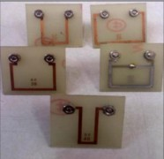

Sabemos que una carga eléctrica crea un campo eléctrico y que éste es capaz de ejercer una fuerza sobre otra carga. Un campo magnético ejerce una fuerza sobre una carga siempre y cuando esta última esté en movimiento. Podemos afirmar que una carga genera un campo magnético solo cuando está en movimiento.
La fuerza de origen magnético (\(\vec{F}_m\)) que experimenta una carga (\(q\)) en movimiento, se puede calcular con la expresión (obtenida experimentalmente):
\(\vec{F}_m = q(\vec{v} \times \vec{B})\)
en la que \(\vec{v}\) es la velocidad de dicha carga y \(\vec{B}\) es el campo magnético en el que se halla inmersa. A partir de esta expresión, resulta sencillo determinar la fuerza magnética que experimenta un conductor con corriente eléctrica cuando éste se halla inmerso en un campo magnético.
Con base en lo anterior, podemos tener una configuración en la que se tienen fuerzas de interacción entre conductores con corriente, las cuales desempeñan un papel importante en muchas situaciones prácticas en las que los conductores con corriente se hallan muy cerca uno del otro; inclusive esta configuración tiene un papel relevante asociada a la definición de la unidad del Sistema Internacional denominada ampere. Cada conductor se encuentra en el campo magnético producido por el otro, por lo que cada uno experimenta una fuerza.
Vale la pena destacar que, adicionalmente, lo anterior es el principio básico de funcionamiento de un motor eléctrico, así como del instrumento de medición denominado multímetro.
1. Ajusta los valores de la corriente y la longitud del conductor.
2. Modifica la intensidad y dirección del campo magnético.
3. Observa el vector de fuerza resultante en el modelo 3D.